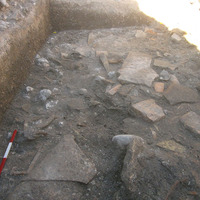

Nel 2011 si sono concluse le indagini archeologiche nella chiesa di S. Maria in Portuno, in attesa di provvedere ai necessari restauri e alla musealizzazione dell'intero complesso.
Ma le ricerche non sono state interrotte: già nel 2012, infatti, il gruppo di ricerca dell'Università di Bologna ha iniziato a collaborare ai lavori della vicina cava di ghiaia (anch'essa in località Madonna del Piano) e nell'estate del 2013 sono partite le prime ricerche archeologiche, in regime di Concessione della Soprintendenza per i Beni Archeologici delle Marche, finalizzate solo al controllo della consistenza del deposito archeologico. I risultati sono stati di grande interesse, tanto che si è deciso di continuare la collaborazione con il Comune di Corinaldo e con l'Ente che gestisce la coltivazione della suddetta cava e di promuovere ulteriori ricerche.
Il nuovo scavo è stato eseguito dal 4 agosto al 5 settembre 2014, con una settimana di pausa in corrispondenza del Ferragosto.
Allo scavo hanno partecipato, sotto la direzione del prof. Giuseppe Lepore, ricercatori e studenti dell'Università di Bologna e di altri Atenei europei: dott. Michele Silani (Dottorato di Ricerca), dott.ssa Federica Galazzi (Dottorato di Ricerca), dott. Francesco Belfiori (Scuola di Specializzazione in Archeologia), Wu Szu-Yi, Mattia Gafà, Valentina Orrù, Francesca Palmo, Annalisa Pietrobelli, Chiara Romano, Maria Segato, Pierre de la Brousse (Università di Ghent - Belgio), Alessandra Antinori, Pietro Balzani, Maria Casoli, Giulia Siniscalco, Silvia Sassoli, Mirco Baldini.
Le spese di vitto e alloggio sono state sostenute dal Comune di Corinaldo, così come tutte le necessità logistiche e i mezzi meccanici per lo splateamento sono stati forniti dall'Ufficio Tecnico del medesimo Comune.
Lo scavo ha messo in luce un'ampia porzione di un insediamento rustico attribuibile con certezza all'età romana, che trova la sua ragion d'essere, molto probabilmente, nella sua posizione rispetto al fiume Cesano: il sito si trova, infatti, su di un terrazzo fluviale in connessione con una viabilità di fondovalle e con un probabile attraversamento del fiume nei pressi.
La forma del complesso non è ancora chiara, ma sembra che si possa articolare in una serie di vani disposti intorno ad un'area scoperta. Le murature erano in argilla cruda, rinvenuta al di sopra del crollo delle coperture (tegole e coppi).
Il rinvenimento più straordinario è, senza dubbio, una grande piscina, interamente rivestita di cocciopesto e collocata in posizione centrale: lo scavo del 2014 ha solo in parte rimosso il riempimento che comprende oltre due metri di macerie e di materiali ceramici che andranno rimossi nelle prossime campagne di scavo.
Al termine dei lavori le strutture rinvenute sono state ricoperte e protette in attesa della campagna di scavo 2015, grazie al contributo della Direzione della cava di ghiaia (Antonio Mariotti) che ha messo a disposizione la ghiaia per la copertura e i mezzi meccanici per la ricollocazione del terreno.
- I lati nord e ovest della vasca con il taglio per l'asportazione di qualcosa (US 69)
- La canaletta US 86 vista da sud
 Il muro 13 dopo l'asportazione delle fosse di vite
Il muro 13 dopo l'asportazione delle fosse di vite- L'invaso del canale 5
- Particolare del muro 13
- Preparazione US 79
- Mattoncini per opus spicatum
- Piano esterno del vano A (a destra il muro US 40)
- La canaletta US 89 vista da sud
- La canaletta US 89 vista da nord
- La canaletta US 89 dopo lo svuotamento
- La canaletta US 86 vista da nord
- Il lato sud della vasca
- La struttura US 50 che si prolunga il vano A verso est
- La strada US 25 prosegue all'interno dell'edificio
- La grande vasca E
- Dettaglio delle murature della vasca E
- Il saggio condotto all'interno del riempimento della vasca
- Particolare di una delle tegole angolari rinvenute nella vasca
- Materiali sul fondo della vasca (US 78)
- Particolare della grande chiave di ferro
- Particolare dell'angolo sud-ovest della vasca col rivestimento in cocciopesto
- Planimetria dell'area di scavo

{kind=link}
{kind=link}
{kind=link}
{kind=link}
{kind=link}
{kind=link}
{kind=link}
{kind=link}
{kind=link}
{kind=link}
{kind=link}
{kind=link}
{kind=link}
{kind=link}
{kind=link}
{kind=link}
{kind=link}
{kind=link}
{kind=link}
{kind=link}
{kind=link}
{kind=link}